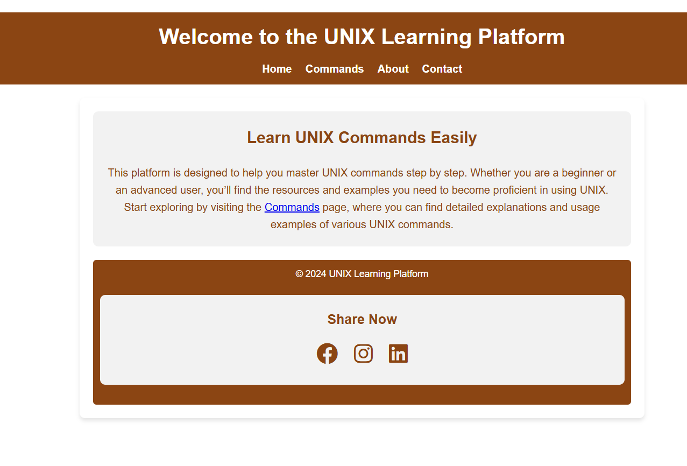

01 / 05
UNIX Learning Platform
An interactive web-based learning platform designed to help beginners understand UNIX commands through structured lessons and practical examples. It provides a simple and beginner-friendly interface for exploring essential UNIX commands and building foundational command-line knowledge.